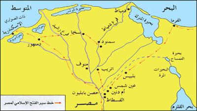

للاستزادة: شرح المرشد السياحي بالإنجليزية
🎙️
TOUR GUIDE SPOKEN SCRIPT
Explaining the Arab Conquest of Egypt to English-Speaking Guests
▼
Explaining the Arab Conquest of Egypt to English-Speaking Guests
"Distinguished guests, in late 639 AD, a veteran commander named Amr ibn al-Aas crossed the Sinai desert from Palestine with an initial force of barely 4,000 riders. His mission was not merely territorial expansion; it was a military necessity to protect the newly liberated Levant and secure Medina, the capital of the Caliphate, from Byzantine maritime retaliations."
"Tracing the desert edge, Amr took Pelusium (Al-Farama), bypassed the delta marshes, and routed the imperial army at the Battle of Heliopolis (Ain Shams). The pivotal climax was the 8-month siege of the formidable Babylon Fortress. Upon its capitulation in April 641 AD, Amr marched to Alexandria, securing the historic Treaty of Alexandria with Cyrus (Al-Muqawqis). The treaty guaranteed complete freedom of worship for Egyptian Christians, protected church properties, readmitted persecuted Jews, and invited the exiled Coptic Patriarch Benjamin I back to Alexandria with full honors."
افتح قاموس ومصطلحات الدرس
📖
قاموس ومصطلحات المحاضرة للمرشد (اضغط هنا لفتح / طي القاموس)
TOUR GUIDE BILINGUAL GLOSSARY
▼
قاموس ومصطلحات المحاضرة للمرشد (اضغط هنا لفتح / طي القاموس)
TOUR GUIDE BILINGUAL GLOSSARY💡 تنبيه للمرشد السياحي: هذه المصطلحات والكلمات مستخرجة من المنهج الأكاديمي المعتمد، ومزودة بالنطق الصوتي والمعنى السياقي للمرشد:
الفرما (بيلوزيوم)
بوابة مصر الشرقية
Pelusium
/pəˈluːziəm/
▼
الفرما (بيلوزيوم)
المعنى السياقي للمرشد: البوابة الشرقية الكبرى لمصر على البحر المتوسط شرق بورسعيد حالياً؛ حاصرها المسلمون شهراً كاملاً وكانت أول عقبة حقيقية أمام جيش الفتح.
معركة عين شمس
الموقعة الفاصلة (640م)
Battle of Heliopolis
/ˌhiːliˈɒpəlɪs/
▼
معركة عين شمس
المعنى السياقي للمرشد: المعركة الفاصلة في الميدان المفتوح بين جيش المسلمين والجيش البيزنطي النظامي؛ انتصر فيها المسلمون وفرت فلول الروم إلى داخل حصن بابليون والإسكندرية.
أم دنين (الأزبكية)
شمال بابليون
Umm Dunayn
/ʊm dʊˈneɪn/
▼
أم دنين (الأزبكية)
المعنى السياقي للمرشد: قرية وحصن بيزنطي شمال حصن بابليون (موقع حديقة الأزبكية وميدان رمسيس حالياً بالقاهرة)؛ استولى عليها عمرو بن العاص لتأمين ظهره قبل عين شمس.
حصار حصن بابليون
حصار 8 أشهر
Siege of Babylon
/ˈbæbɪlən/
▼
حصار حصن بابليون
المعنى السياقي للمرشد: أطول وأعنف حصار في فتح مصر، استمر 8 أشهر كاملة (سبتمبر 640 – أبريل 641م) حتى اعتلى الزبير بن العوام السور وفتح الباب.
صلح الإسكندرية
معاهدة 641م
Treaty of Alexandria
/ˌælɪɡˈzændriə/
▼
صلح الإسكندرية
المعنى السياقي للمرشد: معاهدة الاستسلام والصلح التاريخية الموقعة بين عمرو بن العاص وقيرس (المقوقس) التي ضمنت جلاء الحامية البيزنطية وحرية الأقباط واليهود.
معركة نقيوس
زاوية رزين (646م)
Battle of Nikiou
/nɪˈkiːuː/
▼
معركة نقيوس
المعنى السياقي للمرشد: المعركة الحاسمة التي هزم فيها عمرو بن العاص جيش القائد البيزنطي مانويل في المنوفية، وقتل فيها مانويل واستعاد المسلمون الإسكندرية للأبد.
أسباب ودوافع الفتح العربي الإسلامي لمصر (٦ أسباب جوهرية)
تأمين فتوحات الشام وفلسطين
كان بقاء مصر في يد البيزنطيين يشكل تهديداً عسكرياً مباشراً ودائماً لظهور المسلمين في الشام وفلسطين؛ إذ كان بإمكان الإمبراطورية البيزنطية حشد جيوشها بمصر والانقضاض مجدداً لاستعادة القدس.
حماية المدينة المنورة مركز الخلافة
قرب المدينة المنورة الجغرافي من بحر القلزم (البحر الأحمر) جعلها عرضة لخطر قيام الأسطول البيزنطي بإنزال بحري مفاجئ على سواحل الحجاز للانتقام لما حل بممتلكاتهم في الشام.
التكامل الاستراتيجي بين مصر والشام
خضوع مصر والشام عبر التاريخ لقيادة سياسية وجغرافية موحدة؛ فكلتاهما تتمم الأخرى دفاعياً واقتصادياً، ومن الصعب اعتبار الحدود الصحراوية بينهما حداً فاصلاً منيعاً.
السيطرة على شريان التجارة العالمية
موقع مصر وبلاد الشام على ملتقى طرق التجارة البحرية والبرية الكبرى بين الشرق (الهند والصين) والغرب (أوروبا والبحر المتوسط)، والتحكم في تجارة التوابل والحرير.
علم العرب بثراء مصر وخصوبتها
كان العرب على دراية واسعة بثرائها الزراعي وخيراتها الوفيرة، خصوصاً وأن قادة كباراً مثل عمرو بن العاص وعثمان بن عفان زاروا مصر مراراً في رحلات التجارة بالجاهلية.
موقف الأقباط والعداء مع الروم
يقين القيادة الإسلامية التام من معاناة أهل مصر من الاحتلال البيزنطي؛ وتأكد الخليفة عمر بن الخطاب وقادته أن الأقباط سيقفون على الأقل موقف الحياد إن لم يكونوا عوناً للمسلمين للتخلص من الروم.
مشاورات مؤتمر الجابية وخوفاً من حشد «الأرطبون»
تفاصيل مشاورات مؤتمر الجابية وخطر الأرطبون (18 هـ / 639 م):
أشار عمرو بن العاص على الخليفة عمر بن الخطاب بفتح مصر بعد فتح بيت المقدس سنة 17هـ / 638م، لكن الخليفة رأى التريث حتى تهدأ الأوضاع في الشام وتستقر الجبهات.
ثم جدد عمرو بن العاص الفكرة بإلحاح في مؤتمر الجابية بسوريا سنة 18هـ / 639م، معللاً ذلك بخطر حقيقي: وهو فرار القائد البيزنطي الداهية «الأرطبون» (Aretion) إلى مصر بعد هزيمته في القدس، وخوفاً من أن يحشد جنود بيزنطة بمصر ليعود ويسترد بيت المقدس ويهدد المسلمين بالشام.
أذن الخليفة عمر لعمرو بن العاص بجيش مقداره 3500 إلى 4000 مقاتل، وشرط عليه في كتاب شهير: «إن أدركك كتابي قبل أن تدخل أرض مصر ولم تعبرها فارجع، وإن دخلتها فامضِ على بركة الله واستنصر الله». فواصل عمرو المسير حتى عبر وادي العريش قبل فتح الكتاب.
خط سير حملة عمرو بن العاص ومحطات فتح مصر

شكل (١): خريطة خط سير حملة الفتح الإسلامي لمصراستراتيجية التحرك العسكري: التوغل بمحاذاة الصحراء
اعتمد عمرو بن العاص على تفوق الفرسان العرب في حرب الصحراء؛ فتجنب المرور في قلب الدلتا المكتظة بالقنوات والمستنقعات والحصون النهرية البيزنطية، وسلك الطريق الصحراوي الشرقي المحاذي للبحر الأحمر وخليج السويس وصولاً إلى رأس الدلتا.
خرج عمرو بن العاص من قيسارية بفلسطين بجيش قوامه نحو 4,000 جندي، ووصل إلى العريش فاستولى عليها دون مقاومة تذكر، واحتفل هناك مع الجيش بعيد الأضحى المبارك.
مدينة بلوز القديمة (شرق بورسعيد)؛ واجه المسلمون مقاومة بيزنطية شديدة استمرت شهراً كاملاً، حتى سقط الحصن في أيديهم وفُتحت البوابة الشرقية الكبرى للدلتا.
واصل عمرو السير بمحاذاة الصحراء حتى بلغ بلبيس؛ حاصرها شهراً ودار قتال شديد مع الروم خسر فيه البيزنطيون 1000 قتيل و3000 أسير، وسقطت المدينة.
حصن نهري يسيطر على شاطئ النيل شمال بابليون؛ استولى عليه عمرو وطلب إمدادات عاجلة من الخليفة عمر بن الخطاب. وتوجه للفيوم مؤقتاً لتطهيرها من بقايا الروم.
أرسل عمر مدداً كبيراً على رأسه أربعة قادة كبار: الزبير بن العوام، المقداد بن الأسود، عبادة بن الصامت، ومسلمة بن مخلد، وكتب عمر لعمرو: «إني أمددتك بأربعة آلاف رجل، على كل ألف رجل منهم رجل بألف رجل».
التقى الجيشان في سهل عين شمس؛ قسّم عمرو جيشه إلى ثلاثة أقسام ونصب كميناً محكماً بقيادة خاجة بن حذافة، فانهار جيش الروم تماماً وفرت فلوله نحو حصن بابليون والإسكندرية.
ملحمة حصار حصن بابليون (٨ شهور وسقوط معقل بيزنطة)
وقائع حصار حصن بابليون واقتحام الزبير بن العوام (سبتمبر 640 – أبريل 641م):
حاصر عمرو بن العاص حصن بابليون المنيع لمدة نحو 8 أشهر كاملة (سبتمبر 640 – أبريل 641م). وكان الحصن محصناً بخنادق مائية ومدافع رومانية على أبراجه.
المفاوضات والخيارات الثلاثة: في أثناء الحصار، حاول قيرس (المقوقس) التفاوض ودفع مبلغ مالي لعمرو للانسحاب، لكن عمرو رفض بشدة وخيّرهم بين الخيارات الثلاثة المعهودة في الشريعة الإسلامية: الدخول في الإسلام، أو دفع الجزية والحفاظ على أموالهم وكنائسهم، أو القتال.
اقتحام الزبير بن العوام: بعد استئناف القتال، أحضر الصحابي الجليل الزبير بن العوام سلماً خشبياً طويلاً ووضعه عند البرج الجنوبي للحصن واعتلى السور وهو يكبر ومعه جماعة من المسلمين، وظن الروم أن المسلمين اقتحموا الحصن بالكامل ففروا هاربين، وفتح الزبير باب الحصن ليدخل الجيش الإسلامي في أبريل 641م.
شروط صلح الإسكندرية التاريخي التسعة (نوفمبر 641م)
بعد سقوط بابليون، سار عمرو إلى الإسكندرية وفرض عليها حصاراً، فاضطر المقوقس لتوقيع «صلح الإسكندرية»، وتضمنت بنوده الـ 9 وثيقة تسامح تاريخية شهد بها المؤرخون العالميون:
محاولة مانويل استرداد الإسكندرية وحسم معركة نقيوس (25 هـ / 645 م)
محاولة مانويل استرداد الإسكندرية وحسم معركة نقيوس (25 هـ / 645 م):
لم يستتب الفتح نهائياً واستسلام الروم بصفة تامة إلا في سنة 25 هـ / 645 م؛ عندما حاول الروم بقيادة القائد مانويل (Manuel) في عهد الإمبراطور قنسطانز الثاني (حفيد هرقل) استرداد مصر بأسطول بحري ضخم.
نزل أسطول مانويل فجأة واستولى على الإسكندرية وعاث فيها فساداً وتوغل الروم في الدلتا حتى اقتربوا من حصن بابليون. وأمام هذا الخطر الداهم، ألحّ أهل مصر على الخليفة عثمان بن عفان مطالبين بإرسال عمرو بن العاص لما عرفوا عنه من خبرة وحنكة بحروب الروم، فاستجاب الخليفة لطلبهم وأعاد عمرو لقيادة الجيش.
التقى جيش عمرو بالروم في معركة نقيوس (Nikiou) بالدلتا، وقاتل المسلمون قتالاً بطولياً انتهى بهزيمة الروم ومقتل مانويل، وفرّت بقاياهم إلى الإسكندرية، فلاحقهم عمرو ودخل الإسكندرية وأسقط أسوارها البحرية لتأمينها نهائياً، وتم طرد الوجود البيزنطي من مصر إلى الأبد.
افتح تدريبات وأسئلة الدرس
بنك الأسئلة واختبار الفهم التفاعلي
اختبر استيعابك لمحاضرة الفتح الإسلامي لمصر (٧ أسئلة دقيقة)
اختر الإجابة الصحيحة لتكتشف التعليل الأكاديمي والتوظيف الميداني فوراً.